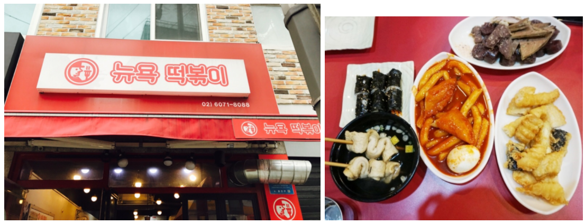

When thinking of the Korean ttuck-bok-ki, we usually think of it as hot and spicy. Despite of that being one of the attractive features of it, there are those who don’t like spicy food but yet love the taste of tteok-bok-ki. Well say no more as this restuarants is for those who have similar thoughts and would like to have a taste of the sweet tteok-bok-ki!
Name: 뉴욕 떡볶이 (new York tteok-bok-ki)
Distance : 2 minute walk from the back gate of Sejong university.
Cost range : under 5000 won
Rating : 4/5
Recommended food : Curry tteok-bok-ki (3000 won) , Special set (11,000 won)
Located near the back gate of Sejong university, it is a must place that everyone should visit. The store itself isn’t that big as most customers usually choose to eat the food so you’ll see that there aren’t a lot of customers eating inside. The kitchen is placed on the front side of the store as most tteok-bok-ki stores are in korea so you’ll be able to see the process of the food being made (although there isn’t much to it other than cutting and scooping )
It’s most noticeable menu is the curry tteok-bok-ki (카레 떡볶이). Being the main menu of this store, it's famous for its non-spiciness but also being tasty at the same time. It’s loved by lots as the price itself isn’t high and can be a welcoming food at any time of the day. There’s also the normal type of tteok-bok-ki with the original spiciness if anyone wants the normal type of tteok-bok-ki w. Side menus include Sundae , cheese kimbap, and fish-sausages. They aren’t that expensive either so I recommend that you try it along as it tastes delicious together.